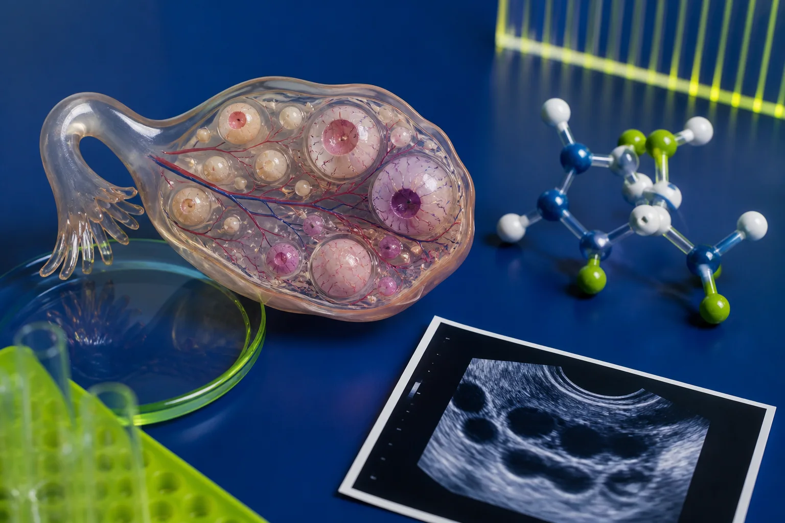
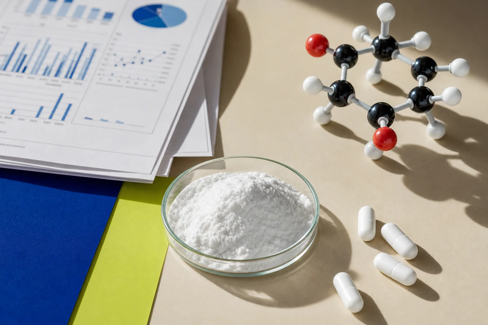

«СПКЯ видно по внешности»
Нет. Вес, кожа и волосы не заменяют анамнез, анализы и диагностические критерии.
При СПКЯ слабый ответ мышц и жировой ткани на инсулин может сочетаться с сохранённым сигналом в яичниках. Организм повышает инсулин, а тот способен усиливать выработку андрогенов. Но СПКЯ сложнее одной гормональной цепочки — и не определяется одним анализом.
8 источников
рекомендации и исследования
СПКЯ бывает при любом размере тела. Избыток веса может усиливать метаболические риски, но не является причиной «по умолчанию».
Синдром, а не один симптом
Синдром поликистозных яичников встречается примерно у 10–13% женщин репродуктивного возраста по Роттердамским критериям. Проявления различаются: нерегулярный цикл, избыток андрогенов, трудности с овуляцией, акне, рост волос — или комбинация признаков.
Название сбивает с толку: «поликистозная» картина — это множество небольших фолликулов, а не обязательно патологические кисты. Одного УЗИ недостаточно для диагноза.
Нет. Вес, кожа и волосы не заменяют анамнез, анализы и диагностические критерии.
Нет. Морфология яичников — только один из возможных критериев у взрослых.
Нет. Компенсаторно высокий инсулин может какое-то время удерживать глюкозу.
Не выключатель, а сеть сигналов
При системной инсулинорезистентности поджелудочная железа может выделять больше инсулина. В мышцах и жировой ткани метаболический ответ ослабевает, но стероидогенный ответ яичников способен сохраняться. Вместе с ЛГ инсулин может усиливать синтез андрогенов в тека-клетках.
Периферические ткани
Для контроля обмена требуется больше инсулина.
Компенсация
Глюкоза при этом ещё может быть обычной.
Яичники
Андрогенный ответ может усиливаться.

Что именно связывается
Гиперинсулинемия способна стимулировать синтез андрогенов в яичниках и уменьшать выработку печенью глобулина, связывающего половые гормоны. Больше свободных андрогенов может нарушать созревание фолликулов. В обратную сторону избыток андрогенов тоже способен ухудшать метаболический ответ тканей.
“ Не «метаболизм против репродукции», а петля обратной связи.
Сначала исключить похожее
Диагноз ставят после исключения других причин: заболеваний щитовидной железы, гиперпролактинемии, неклассической врождённой гиперплазии надпочечников и некоторых других состояний. Критерии для подростков строже.
Овуляция
Олиго- или ановуляция с учётом времени после менархе и других причин.
Андрогены
Например, гирсутизм или подтверждённое повышение андрогенов.
Морфология
Используют один из вариантов, когда он действительно нужен для алгоритма.
УЗИ и АМГ не нужны только ради подтверждения СПКЯ у взрослой пациентки.
Нужны и нарушения овуляции, и гиперандрогения; нерегулярность в первый год после менархе считается нормальной. При одном признаке рекомендуют наблюдение и повторную оценку не позднее восьми лет после менархе. УЗИ и АМГ для диагностики не используют.
Клинически доступные способы измерить инсулинорезистентность имеют ограниченную практическую ценность и не рекомендуются в рутинной помощи.

Популярно ≠ убедительно доказано
Инозитолы участвуют во внутриклеточной передаче сигналов, поэтому идея применения при СПКЯ биологически правдоподобна. Небольшие исследования находят изменения некоторых метаболических и гормональных показателей, но результаты неоднородны.
Инозитол можно обсуждать при СПКЯ: вероятный вред невелик, а отдельные метаболические показатели могут улучшаться.
Польза для овуляции, гирсутизма и веса ограничена. Для лечения бесплодия инозитол считается экспериментальным.
Руководство не рекомендует конкретный тип, дозировку или соотношение мио- и D-хиро-инозитола из-за недостатка качественных данных.
Лечат цель, а не название
Универсальной схемы нет. Выбор зависит от главной цели: регулярности цикла, симптомов гиперандрогении, метаболического здоровья, контрацепции или беременности.
Подбираются с учётом противопоказаний, симптомов и репродуктивных планов.
Метформин имеет более сильную доказательную базу, чем инозитол, но подходит не всем.
Летрозол — первая фармакологическая линия при ановуляторном бесплодии, связанном с СПКЯ, если других факторов бесплодия нет.
Без наказания телом
Физическая активность и устойчивое питание рекомендуются всем при СПКЯ для общего и метаболического здоровья. Ни одна конкретная диета или вид тренировки не доказали превосходства для всех.
Редкие кровотечения — не мелочь
Продолжительное действие эстрогенов без циклического прогестерона повышает риск гиперплазии. Дополнительные факторы — более высокий вес, диабет 2 типа и стойкое утолщение эндометрия.
Профилактическую стратегию — гормональную контрацепцию или регулярный прогестоген — подбирают индивидуально.
Рутинное УЗИ или биопсия без показаний не рекомендуются. Необычное кровотечение требует обращения к врачу.
Коротко
Симптомы, репродуктивные цели и метаболические риски у всех разные.
Диагноз не ставят по инсулину, HOMA-IR, весу или одному УЗИ.
Личный положительный опыт возможен, но он не превращает добавку в доказанное лечение.
Проверить самим
Подборка обновлена 2 сентября 2026 года.